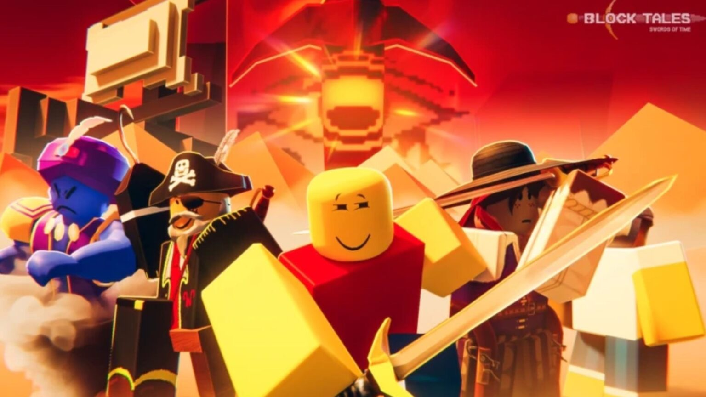

BlockTales is a Turn-Based RPG with deckbuilding mechanics inspired by certain Paper Mario games.
In the story you go to a convention and are sent back in time in a accident. You are then sent on a mission to recover the Swords of TimeTM so you can send yourself back into the future and in the process fighting corrupted guardians, monsters, and some things that go deeper.
I am interested in BlockTales because I think it is a great example of how far the roblox game engine can be stretched to create something actually interesting. I think it's a great example that if you make something with passion you can truly make a good game no matter the limitations.